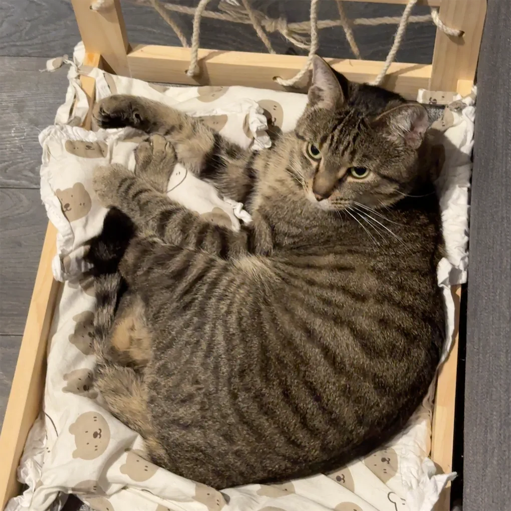
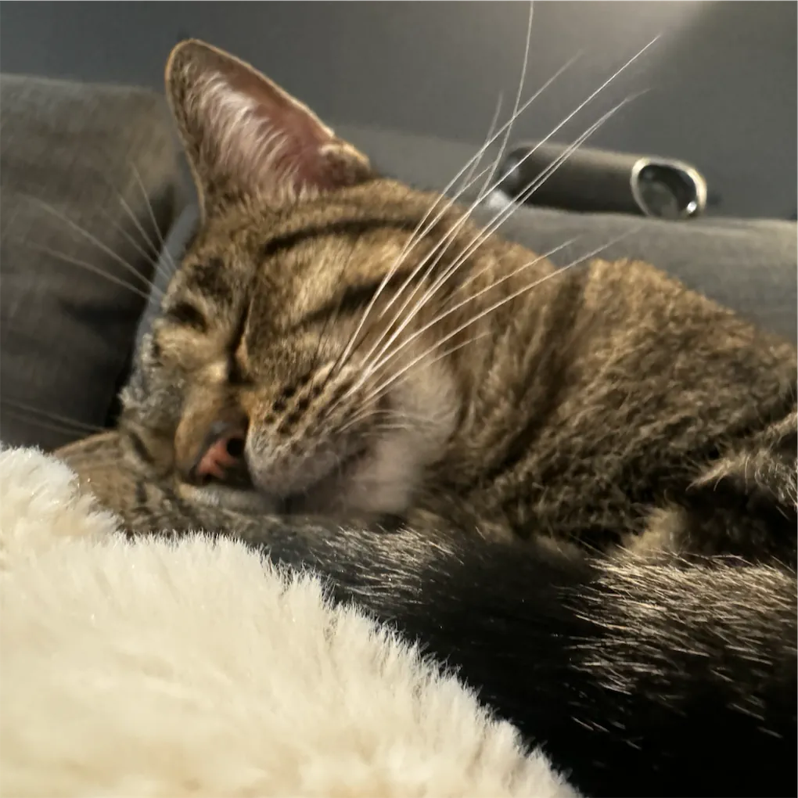

Hi! My name is Chloe Ngo. I'm 21 years old and I'm currently studying computer science at Toronto Metropolitan University as an international student.
I have a fascination with technology and how it can enhance our daily lives. Whether I'm developing applications
or learning about the lasted trends in tech, I'm excited to explore all that this field has to offer.
More about me and my family
My birthday is January 14th, 2003. I was born and raised in Hanoi, Vietnam, and I'm the second child in my family.
I have an older brother who is 4 years older than me. My mom is a businesswoman and my dad was an electrician. My mom is still working while my dad has alreeady retired. I had
a very memorable childhood filled with laughter and adventures.
My Study Abroad Journey in Canada
Deciding to go to Canada to study abroad is one of the most important decisions in my life. It all began when I was in high school in Hanoi, Vietnam,
surrounded by the familiar sights and sounds of my hometown. While I loved my life there, I often found myself dreaming of new experiences and adventures in a foreign land.
At 18, I left Vietnam to study abroad in Canada, completing grades 11 and 12.
Arriving in Canada was a whirlwind of emotions. The first time being in Toronto, I felt a mix of awe and anxiety. Everything was so new—the sounds, the people,
and the pace of life. It was a bit overwhelming, but I quickly learned that everyone was welcoming and eager to connect. As I settled into my new life, I discovered
the beauty of studying in a diverse environment. Beyond academics, I also made a lot of friends thorough my journey.
During high school in Canada, I took several programming courses that I thoroughly enjoyed, which inspired me to pursue a degree in Computer Science.
After graduating, I continued my education in post-secondary studies and applied for the Computer Science program at Toronto Metropolitan University,
where I'm currently still studying.
Reflecting on my decision to study abroad, I realize that it has transformed me in ways I never anticipated. I've become more independent, adaptable,
and open-minded. This journey has taught me that stepping out of my comfort zone can lead to extraordinary growth.
My Interests
In my free time, I enjoy a variety of hobbies, including:
Programming
Binge watching Netflix shows
Playing sports like pickleball and badminton
Besides my hobbies, I also like to hang out with my friends. We often go to a coffee shop after school to study together.
I love traveling to different places. I've explored North America and visited a few countries in Asia so far. Now, I'm excited to check out Europe next!
Want to know where I went last year?
Last winter break, I went to Cancun, Mexico with my friends for vacation. We booked a room with
a beachview. The water was so clean and blue. The foods there were amazing, especially tacos!
Meet Maxey the Cat!


Some pictures of Maxey
I've always been a pet lover, and my home wouldn't be complete without my furry companion, Maxey.
He is a very playful 2-year-old cat who weighs around 5kg. His curious personality and charming antics bring joy to my everyday life.
Whether he's lounging in the sun or chasing after his favorite toys, Maxie never fails to make me smile.
One of his favorite daily activities is grooming himself multiple times throughout the day, always keeping his fur clean and pristine.